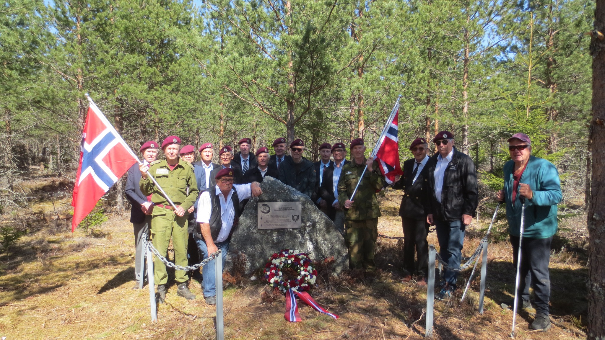


<!DOCTYPE html>
<html>
    <head>
        <meta charset="utf-8">
		<meta name="viewport" content="width=device-width, initial-scale=1.0, maximum-scale=1.0, user-scalable=no" />
        <title>Trandum/Aursletta</title>
        <link rel="stylesheet" href="https://unpkg.com/leaflet@1.9.4/dist/leaflet.css" />
		<link rel="stylesheet" href="src/leaflet_awesome_number_markers.css" />
        <script src="https://unpkg.com/leaflet@1.9.4/dist/leaflet.js"></script>
		<script src="src/leaflet_awesome_number_markers.js"></script>
    </head>
    <style>
	body{
    padding: 0;
    margin: 0;
}
</style>
			<div id="map" style="height: 100vh; width: 100vw;"></div>
<!--		<div id="map" style="height: 1400px; width: 1000px;"></div> -->
		<script>
            var map = L.map('map').setView([60.220,11.12], 14)
            L.tileLayer('https://opencache.statkart.no/gatekeeper/gk/gk.open_gmaps?layers=topo4&zoom={z}&x={x}&y={y}', {
                attribution: '<a href="http://www.kartverket.no/">Kartverket</a>'
            }).addTo(map);
			var ParkeringIcon = L.icon({
			iconUrl: 'src/images/P-tegn.png',
			iconSize: [35, 50], // size of the icon
			iconAnchor: [17, 40], // point of the icon which will correspond to marker's location
			popupAnchor: [-3, -76] // point from which the popup should open relative to the iconAnchor
			})
        </script>
		<script>


var steder = new Array(//elementene er : oppslagstekst, lengdegrad, breddegrad, evnt markørfarge, tallfarge
			["tom",0.0,0.0,"tom"],//lar index 0 være tom, for enkelhets skyld i formler
			["<strong>Pit´n </strong><br>anno 1970",60.22727,11.10976,"black","black"],
			["<strong>Samlingspunkt</strong>",60.22644,11.11299],
		//	["<strong>Minnesteinen</strong>",60.22592,11.11318,"green"],
		//	["<strong>Vekatosøkket</strong><br>(Fastpunkt)",60.2318,11.1156],
			["<strong>Flystripa</strong><br>(Start NØ)",60.22585,11.11483],
			["<strong>Flystripa</strong><br>(Enden SV)",60.22209, 11.10569],
		//	["<strong>Stridsvognvrak</strong><br>(tilnærmet lokalitet)",60.21901, 11.10532],
		//	["<strong>Tankskytebanen</strong><br> (fastpunkt)",60.22068, 11.11702],
			["<strong>Minnebauta</strong><br>Trandumskogen",60.21892,11.11799,,],
			["<strong>Grana</strong><br> (største grana anno 1970)",60.22962, 11.10792],
			["<strong>Hoppetårnet</strong>",60.21341, 11.11413],
			["<strong>Skolebygningen</strong></br>Trandum leir",60.2111,11.12539,"green"],
			["<strong>Veteranhuset</strong></br>Trandum leir",60.2121999,11.1342271,"green"]
			)
		for (j=1;j<steder.length;j++){
		var sted = L.marker([steder[j][1], steder[j][2]], {icon: new L.AwesomeNumberMarkers({number: j, markerColor: steder[j][3],numberColor: steder[j][4] })}).addTo(map);
		sted.bindPopup(steder[j][0]);
		}
		var minnesten =  L.marker([60.22592,11.11318], {icon: new L.AwesomeNumberMarkers({number: j, markerColor: "green" })}).addTo(map);
		minnesten.bindPopup('<p>Minnesteinen</p>'); // Bind a popup to the marker

		minnesten.on('mouseover', function (e) { // Add an event listener for the 'mouseover' event
			this.openPopup(); // Open the popup
			});
	
		minnesten.on('mouseout', function (e) { // Add an event listener for the 'mouseout' event
			this.closePopup(); // Close the popup
			});
		
// make polyline from an array of LatLng points
var startend = [
    [60.22585,11.11483],
    [60.22209, 11.10569]
];
var flystripe = L.polyline(startend, {color: 'gray'}).addTo(map);
var parkering = L.marker([60.22694,11.11096], {icon: ParkeringIcon}).addTo(map);
var trasepunkter =[
	[60.22694,11.11096],
	[60.2267539,11.111413],
	[60.2266398,11.1115222],
	[60.226522,11.1115985],
	[60.2263294,11.1116307],
	[60.2261995,11.1115949],
	[60.2261115,11.1114952],
	[60.2258926,11.1110731],
	[60.2258635,11.113],
	[60.22592,11.11318]
	];
var trase = L.polyline(trasepunkter, {color: 'red',opacity: 0.3, smoothFactor: 0, dashArray: "10 10" }).addTo(map);
		</script>
<script>
// Create a new control to hold the image
var imageControl = L.control({position: 'bottomright'});

imageControl.onAdd = function(map) {
    var img = L.DomUtil.create('img');

    img.src = 'src/images/stedsliste.png'; // URL of your image
    img.style.width = '200px'; // Width of the image
 // Add an event listener to the image
    img.addEventListener('click', function() {
        img.style.display = 'none'; // Hide the image when it's clicked
    });
    return img;
};

// Add the control to the map
imageControl.addTo(map);

</script>
	
    </body>
</html>
